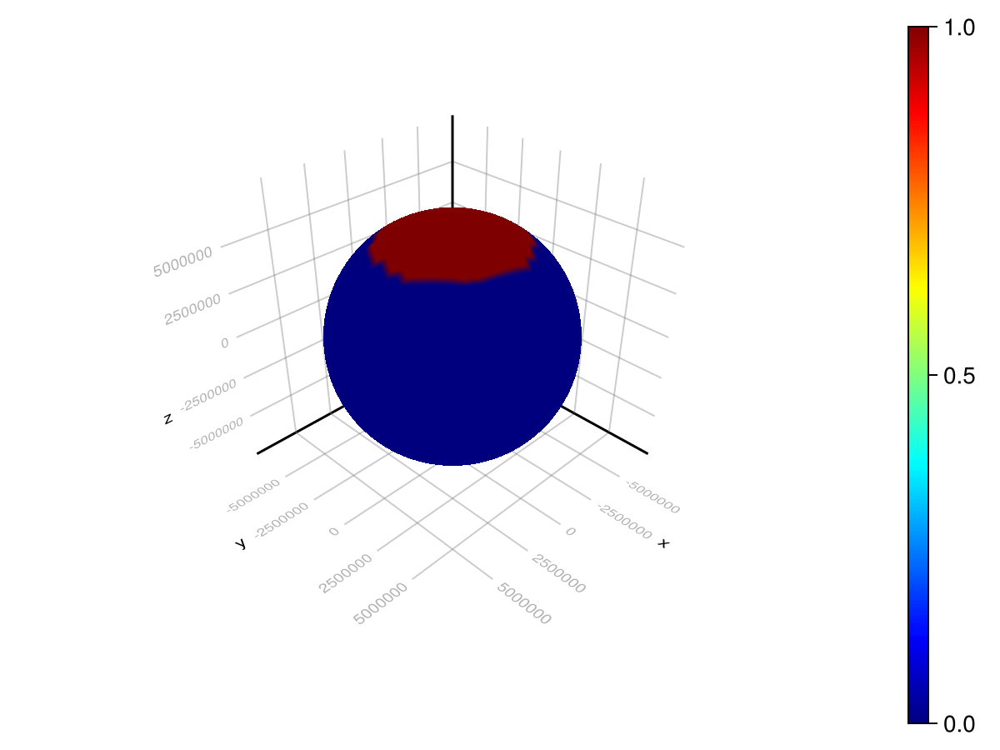

Couple Ice and Water Dynamics
Let's use Decapodes to implement the incompressible Navier-Stokes as given by Mohamed et al.. We will run these dynamics on the sphere. We will couple this model with Halfar glacier dynamics on the sphere. For the initial conditions of the Halfar ice thickness, we will use an idealized polar ice cap.
Note that the time scale at which ice creeps is much larger than the time scale at which the water in the ocean would flow. So we can either choose to model a very slow moving fluid around the ice (like a storm on a gas giant), or we can choose to model on a shorter timescale, on which the ice does not move very much.
# AlgebraicJulia Dependencies
using Catlab
using CombinatorialSpaces
using Decapodes
using DiagrammaticEquations
# External Dependencies
using CairoMakie
using ComponentArrays
using GeometryBasics: Point3
using JLD2
using LinearAlgebra
using MLStyle
using OrdinaryDiffEq
Point3D = Point3{Float64};Specify our models
Our first component is the Mohamed et al. formulation of the incompressible Navier-Stokes equations. We will call the flow here "w". This will be the flow after collisions with glaciers are considered.
This is Equation 10 for N=2.
eq10forN2 = @decapode begin
(𝐮,w)::DualForm1
(P, 𝑝ᵈ)::DualForm0
μ::Constant
𝑝ᵈ == P + 0.5 * ι₁₁(w,w)
∂ₜ(𝐮) == μ * ∘(d, ⋆, d, ⋆)(w) + (-1)*⋆₁⁻¹(∧ᵈᵖ₁₀(w, ⋆(d(w)))) + d(𝑝ᵈ)
end
to_graphviz(eq10forN2)Halfar's equation and Glen's law are composed like so:
halfar_eq2 = @decapode begin
h::Form0
Γ::Form0
n::Constant
∂ₜ(h) == Γ * ∘(⋆, d, ⋆)(d(h) ∧₁₀ ((mag(♯ᵖᵖ(d(h)))^(n-1)) ∧₀₀ h^(n+2)))
end
glens_law = @decapode begin
Γ::Form0
(A,ρ,g,n)::Constant
Γ == (2/(n+2))*A*(ρ*g)^n
end
ice_dynamics_composition_diagram = @relation () begin
dynamics(Γ,n)
stress(Γ,n)
end
ice_dynamics = apex(oapply(ice_dynamics_composition_diagram,
[Open(halfar_eq2, [:Γ,:n]),
Open(glens_law, [:Γ,:n])]))
to_graphviz(ice_dynamics, verbose=false)We now have our dynamics that govern glaciers, and our dynamics that govern water. We need to specify the physics of what happens when glaciers and water interact. There are many options, and the choice you make depends on the time-scale and resolution of the dynamics that you are interested in.
An interaction between glacier and water dynamics can look like the following, where flow_after is the flow of water after interaction with ice is considered.
ice_water_composition_diagram = @relation () begin
glacier_dynamics(ice_thickness)
water_dynamics(flow, flow_after)
interaction(ice_thickness, flow, flow_after)
end
draw_composition(ice_water_composition_diagram)
-->
<!-- Title: G Pages: 1 -->
<svg width="669pt" height="309pt"
viewBox="0.00 0.00 669.48 308.55" xmlns="http://www.w3.org/2000/svg" xmlns:xlink="http://www.w3.org/1999/xlink">
<g id="graph0" class="graph" transform="scale(1 1) rotate(0) translate(4 304.5495)">
<title>G</title>
<polygon fill="%23ffffff" stroke="transparent" points="-4,4 -4,-304.5495 665.4827,-304.5495 665.4827,4 -4,4"/>
<!-- n1 -->
<g id="box1" class="node">
<title>n1</title>
<ellipse fill="none" stroke="%23000000" cx="78.8808" cy="-142.7748" rx="78.7618" ry="18"/>
<text text-anchor="middle" x="78.8808" y="-139.0748" font-family="Serif" font-size="14.00" fill="%23000000">glacier_dynamics</text>
</g>
<!-- n4 -->
<!-- junction -->
<g id="junction1" class="node">
<title>n4</title>
<ellipse fill="%23000000" stroke="%23000000" cx="232.2617" cy="-142.7748" rx="2.5" ry="2.5"/>
<text text-anchor="middle" x="208.3867" y="-129.0748" font-family="Serif" font-size="14.00" fill="%23000000">ice_thickness</text>
</g>
<!-- n1&%2345;&%2345;n4 -->
<g id="edge1" class="edge">
<title>n1&%2345;&%2345;n4</title>
<path fill="none" stroke="%23000000" d="M157.8178,-142.7748C189.5275,-142.7748 220.7247,-142.7748 229.6997,-142.7748"/>
</g>
<!-- n2 -->
<g id="box2" class="node">
<title>n2</title>
<ellipse fill="none" stroke="%23000000" cx="587.3112" cy="-142.7748" rx="74.3435" ry="18"/>
<text text-anchor="middle" x="587.3112" y="-139.0748" font-family="Serif" font-size="14.00" fill="%23000000">water_dynamics</text>
</g>
<!-- n5 -->
<!-- junction -->
<g id="junction2" class="node">
<title>n5</title>
<ellipse fill="%23000000" stroke="%23000000" cx="447.0364" cy="-2.5" rx="2.5" ry="2.5"/>
<text text-anchor="middle" x="429.0364" y="-8.8" font-family="Serif" font-size="14.00" fill="%23000000">flow</text>
</g>
<!-- n2&%2345;&%2345;n5 -->
<g id="edge3" class="edge">
<title>n2&%2345;&%2345;n5</title>
<path fill="none" stroke="%23000000" d="M569.5453,-125.0089C535.0431,-90.5067 461.2578,-16.7214 448.8308,-4.2943"/>
</g>
<!-- n6 -->
<!-- junction -->
<g id="junction3" class="node">
<title>n6</title>
<ellipse fill="%23000000" stroke="%23000000" cx="447.0364" cy="-283.0495" rx="2.5" ry="2.5"/>
<text text-anchor="middle" x="408.0364" y="-289.3495" font-family="Serif" font-size="14.00" fill="%23000000">flow_after</text>
</g>
<!-- n2&%2345;&%2345;n6 -->
<g id="edge5" class="edge">
<title>n2&%2345;&%2345;n6</title>
<path fill="none" stroke="%23000000" d="M569.5453,-160.5406C535.0431,-195.0428 461.2578,-268.8281 448.8308,-281.2552"/>
</g>
<!-- n3 -->
<g id="box3" class="node">
<title>n3</title>
<ellipse fill="none" stroke="%23000000" cx="306.7617" cy="-142.7748" rx="51.4282" ry="18"/>
<text text-anchor="middle" x="306.7617" y="-139.0748" font-family="Serif" font-size="14.00" fill="%23000000">interaction</text>
</g>
<!-- n3&%2345;&%2345;n4 -->
<g id="edge2" class="edge">
<title>n3&%2345;&%2345;n4</title>
<path fill="none" stroke="%23000000" d="M255.4256,-142.7748C246.3521,-142.7748 238.5863,-142.7748 234.7751,-142.7748"/>
</g>
<!-- n3&%2345;&%2345;n5 -->
<g id="edge4" class="edge">
<title>n3&%2345;&%2345;n5</title>
<path fill="none" stroke="%23000000" d="M323.9621,-125.5743C358.2005,-91.3359 432.6767,-16.8597 445.2244,-4.312"/>
</g>
<!-- n3&%2345;&%2345;n6 -->
<g id="edge6" class="edge">
<title>n3&%2345;&%2345;n6</title>
<path fill="none" stroke="%23000000" d="M323.9621,-159.9752C358.2005,-194.2136 432.6767,-268.6898 445.2244,-281.2375"/>
</g>
</g>
</svg>
)
We will use the language of Decapodes to encode the dynamics that ice blocks water from flowing.
We can detect the ice with a sigmoid function. Where there is ice, we want the flow to be 0, and where there is no ice, we will not impede the flow. We won't consider any further special boundary conditions between ice and water here. Since h is a scalar-like quantity, and flow is a vector-like quantity, we can relate them using the wedge product operator from the exterior calculus. We can state these dynamics using the language of Decapodes like so:
blocking = @decapode begin
h::Form0
(𝐮,w)::DualForm1
w == (1-σ(h)) ∧ᵖᵈ₀₁ 𝐮
end
to_graphviz(blocking)
-->
<!-- Title: G Pages: 1 -->
<svg width="184pt" height="425pt"
viewBox="0.00 0.00 184.45 425.07" xmlns="http://www.w3.org/2000/svg" xmlns:xlink="http://www.w3.org/1999/xlink">
<g id="graph0" class="graph" transform="scale(1 1) rotate(0) translate(4 421.066)">
<title>G</title>
<polygon fill="%23ffffff" stroke="transparent" points="-4,4 -4,-421.066 180.4472,-421.066 180.4472,4 -4,4"/>
<!-- n1 -->
<g id="node1" class="node">
<title>n1</title>
<ellipse fill="none" stroke="%23000000" cx="87.4056" cy="-365.4594" rx="22.7556" ry="10.7143"/>
<text text-anchor="middle" x="87.4056" y="-361.7594" font-family="Times,serif" font-size="14.00" fill="%23000000">h:Ω₀</text>
</g>
<!-- n4 -->
<g id="node4" class="node">
<title>n4</title>
<ellipse fill="none" stroke="%23000000" cx="30.4056" cy="-287.033" rx="30.3115" ry="10.7143"/>
<text text-anchor="middle" x="30.4056" y="-283.333" font-family="Times,serif" font-size="14.00" fill="%23000000">•1:Ω•</text>
</g>
<!-- n1&%2345;>n4 -->
<g id="edge3" class="edge">
<title>n1&%2345;>n4</title>
<path fill="none" stroke="%23000000" d="M79.9538,-355.2065C70.0238,-341.5437 52.3912,-317.2831 41.0588,-301.6907"/>
<polygon fill="%23000000" stroke="%23000000" points="42.3964,-300.5545 38.0411,-297.5387 39.5651,-302.6122 42.3964,-300.5545"/>
<text text-anchor="middle" x="70.4056" y="-322.5462" font-family="Times,serif" font-size="14.00" fill="%23000000">σ</text>
</g>
<!-- n2 -->
<g id="node2" class="node">
<title>n2</title>
<ellipse fill="none" stroke="%23000000" cx="152.4056" cy="-326.2462" rx="24.0833" ry="10.7143"/>
<text text-anchor="middle" x="152.4056" y="-322.5462" font-family="Times,serif" font-size="14.00" fill="%23000000">𝐮:Ω̃₁</text>
</g>
<!-- n10 -->
<g id="node10" class="node">
<title>n10</title>
<polygon fill="none" stroke="%23000000" points="153.9056,-87.2132 102.9056,-87.2132 102.9056,-72.2132 153.9056,-72.2132 153.9056,-87.2132"/>
<text text-anchor="middle" x="128.4056" y="-76.0132" font-family="Times,serif" font-size="14.00" fill="%23000000">Ω•×Ω̃₁</text>
</g>
<!-- n2&%2345;>n10 -->
<g id="edge8" class="edge">
<title>n2&%2345;>n10</title>
<path fill="none" stroke="%23000000" stroke-dasharray="5,2" d="M153.5653,-315.5344C155.0423,-300.9424 157.4056,-273.9914 157.4056,-250.9264 157.4056,-250.9264 157.4056,-250.9264 157.4056,-148.8198 157.4056,-127.4976 145.5221,-105.1555 136.9693,-91.8365"/>
<polygon fill="%23000000" stroke="%23000000" points="138.2195,-90.5555 133.9971,-87.3564 135.303,-92.4904 138.2195,-90.5555"/>
<text text-anchor="middle" x="165.4056" y="-214.2264" font-family="Times,serif" font-size="14.00" fill="%23000000">π₂</text>
</g>
<!-- n3 -->
<g id="node3" class="node">
<title>n3</title>
<ellipse fill="none" stroke="%23000000" cx="128.4056" cy="-10.6066" rx="25" ry="10.7143"/>
<text text-anchor="middle" x="128.4056" y="-6.9066" font-family="Times,serif" font-size="14.00" fill="%23000000">w:Ω̃₁</text>
</g>
<!-- n9 -->
<g id="node9" class="node">
<title>n9</title>
<polygon fill="none" stroke="%23000000" points="120.9056,-225.4264 65.9056,-225.4264 65.9056,-210.4264 120.9056,-210.4264 120.9056,-225.4264"/>
<text text-anchor="middle" x="93.4056" y="-214.2264" font-family="Times,serif" font-size="14.00" fill="%23000000">ΩL×Ω•</text>
</g>
<!-- n4&%2345;>n9 -->
<g id="edge5" class="edge">
<title>n4&%2345;>n9</title>
<path fill="none" stroke="%23000000" stroke-dasharray="5,2" d="M39.7015,-276.8361C51.2404,-264.1787 70.8674,-242.6493 82.9285,-229.419"/>
<polygon fill="%23000000" stroke="%23000000" points="84.3361,-230.4726 86.4114,-225.5985 81.7496,-228.1146 84.3361,-230.4726"/>
<text text-anchor="middle" x="76.4056" y="-247.2264" font-family="Times,serif" font-size="14.00" fill="%23000000">π₂</text>
</g>
<!-- n5 -->
<g id="node5" class="node">
<title>n5</title>
<ellipse fill="none" stroke="%23000000" cx="98.4056" cy="-148.8198" rx="30.3115" ry="10.7143"/>
<text text-anchor="middle" x="98.4056" y="-145.1198" font-family="Times,serif" font-size="14.00" fill="%23000000">•2:Ω•</text>
</g>
<!-- n5&%2345;>n10 -->
<g id="edge7" class="edge">
<title>n5&%2345;>n10</title>
<path fill="none" stroke="%23000000" stroke-dasharray="5,2" d="M102.9619,-138.324C108.345,-125.9239 117.2904,-105.3176 123.0136,-92.1339"/>
<polygon fill="%23000000" stroke="%23000000" points="124.7207,-92.5961 125.1066,-87.3127 121.5102,-91.2023 124.7207,-92.5961"/>
<text text-anchor="middle" x="124.4056" y="-109.0132" font-family="Times,serif" font-size="14.00" fill="%23000000">π₁</text>
</g>
<!-- n6 -->
<g id="node6" class="node">
<title>n6</title>
<ellipse fill="none" stroke="%23000000" cx="104.4056" cy="-287.033" rx="25.4118" ry="10.7143"/>
<text text-anchor="middle" x="104.4056" y="-283.333" font-family="Times,serif" font-size="14.00" fill="%23000000">1:ΩL</text>
</g>
<!-- n6&%2345;>n9 -->
<g id="edge4" class="edge">
<title>n6&%2345;>n9</title>
<path fill="none" stroke="%23000000" stroke-dasharray="5,2" d="M102.6868,-276.2351C100.72,-263.8787 97.5028,-243.6667 95.42,-230.5815"/>
<polygon fill="%23000000" stroke="%23000000" points="97.118,-230.1163 94.6037,-225.4536 93.6615,-230.6665 97.118,-230.1163"/>
<text text-anchor="middle" x="107.4056" y="-247.2264" font-family="Times,serif" font-size="14.00" fill="%23000000">π₁</text>
</g>
<!-- n7 -->
<g id="node7" class="node">
<title>n7</title>
</g>
<!-- n7&%2345;>n1 -->
<g id="edge1" class="edge">
<title>n7&%2345;>n1</title>
<path fill="none" stroke="%23000000" d="M119.9447,-412.9345C116.0957,-407.3188 105.4177,-391.7394 97.3348,-379.9463"/>
<polygon fill="%23000000" stroke="%23000000" points="98.762,-378.9331 94.4917,-375.7982 95.875,-380.9119 98.762,-378.9331"/>
</g>
<!-- n7&%2345;>n2 -->
<g id="edge2" class="edge">
<title>n7&%2345;>n2</title>
<path fill="none" stroke="%23000000" d="M122.1719,-412.8705C125.5383,-403.2253 139.1916,-364.1064 146.9494,-341.879"/>
<polygon fill="%23000000" stroke="%23000000" points="148.6978,-342.1802 148.6932,-336.8827 145.3933,-341.0268 148.6978,-342.1802"/>
</g>
<!-- n8 -->
<g id="node8" class="node">
<title>n8</title>
</g>
<!-- n9&%2345;>n5 -->
<g id="edge6" class="edge">
<title>n9&%2345;>n5</title>
<path fill="none" stroke="%23000000" d="M93.9598,-210.2667C94.7499,-199.3463 96.2186,-179.0467 97.2511,-164.7758"/>
<polygon fill="%23000000" stroke="%23000000" points="99.0212,-164.5607 97.6367,-159.4474 95.5303,-164.308 99.0212,-164.5607"/>
<text text-anchor="middle" x="97.9056" y="-181.2264" font-family="Times,serif" font-size="14.00" fill="%23000000">&%2345;</text>
</g>
<!-- n10&%2345;>n3 -->
<g id="edge9" class="edge">
<title>n10&%2345;>n3</title>
<path fill="none" stroke="%23000000" d="M128.4056,-72.0535C128.4056,-61.1331 128.4056,-40.8335 128.4056,-26.5626"/>
<polygon fill="%23000000" stroke="%23000000" points="130.1557,-26.2342 128.4056,-21.2342 126.6557,-26.2342 130.1557,-26.2342"/>
<text text-anchor="middle" x="145.9056" y="-43.0132" font-family="Times,serif" font-size="14.00" fill="%23000000">∧ᵖᵈ₀₁</text>
</g>
</g>
</svg>
)
Here, σ is a sigmoid function that is 0 when d(h) is 0, and goes to 1 otherwise. We see that w is indeed defined as 𝐮, after interacting with the ice boundary is considered.
We can apply our composition diagram to generate our physics:
ice_water = apex(oapply(ice_water_composition_diagram,
[Open(ice_dynamics, [:dynamics_h]),
Open(eq10forN2, [:𝐮, :w]),
Open(blocking, [:h, :𝐮, :w])]))
to_graphviz(ice_dynamics, verbose=false)
We can now generate our simulation:
sim = eval(gensim(ice_water))#1 (generic function with 2 methods)Meshes and Initial Conditions
Since we want to demonstrate these physics on the Earth, we will use one of our icosphere discretizations with the appropriate radius.
rₑ = 6378e3 # [km]
s = loadmesh(Icosphere(5, rₑ))
sd = EmbeddedDeltaDualComplex2D{Bool, Float64, Point3D}(s)
subdivide_duals!(sd, Barycenter())
wireframe(sd)Let's demonstrate how to add operators by providing the definition of a sigmoid function:
sigmoid(x) = (2 ./ (1 .+ exp.(-x*1e2)) .- 1)
function generate(sd, my_symbol; hodge=GeometricHodge())
op = @match my_symbol begin
# This is a new function.
:σ => sigmoid
# Remaining operations (such as our differential operators) are built-in.
_ => error("Unmatched operator $my_symbol")
end
return op
end;generate (generic function with 1 method)Let's combine our mesh with our physics to instantiate our simulation:
fₘ = sim(sd, generate);(::Main.var"#f#9"{PreallocationTools.FixedSizeDiffCache{Vector{Float64}, Vector{ForwardDiff.Dual{nothing, Float64, 12}}}, PreallocationTools.FixedSizeDiffCache{Vector{Float64}, Vector{ForwardDiff.Dual{nothing, Float64, 12}}}, PreallocationTools.FixedSizeDiffCache{Vector{Float64}, Vector{ForwardDiff.Dual{nothing, Float64, 12}}}, PreallocationTools.FixedSizeDiffCache{Vector{Float64}, Vector{ForwardDiff.Dual{nothing, Float64, 12}}}, PreallocationTools.FixedSizeDiffCache{Vector{Float64}, Vector{ForwardDiff.Dual{nothing, Float64, 12}}}, PreallocationTools.FixedSizeDiffCache{Vector{Float64}, Vector{ForwardDiff.Dual{nothing, Float64, 12}}}, PreallocationTools.FixedSizeDiffCache{Vector{Float64}, Vector{ForwardDiff.Dual{nothing, Float64, 12}}}, PreallocationTools.FixedSizeDiffCache{Vector{Float64}, Vector{ForwardDiff.Dual{nothing, Float64, 12}}}, PreallocationTools.FixedSizeDiffCache{Vector{Float64}, Vector{ForwardDiff.Dual{nothing, Float64, 12}}}, PreallocationTools.FixedSizeDiffCache{Vector{Float64}, Vector{ForwardDiff.Dual{nothing, Float64, 12}}}, PreallocationTools.FixedSizeDiffCache{Vector{Float64}, Vector{ForwardDiff.Dual{nothing, Float64, 12}}}, PreallocationTools.FixedSizeDiffCache{Vector{Float64}, Vector{ForwardDiff.Dual{nothing, Float64, 12}}}, PreallocationTools.FixedSizeDiffCache{Vector{Float64}, Vector{ForwardDiff.Dual{nothing, Float64, 12}}}, SparseArrays.SparseMatrixCSC{Float64, Int32}, SparseArrays.SparseMatrixCSC{Float64, Int32}, SparseArrays.SparseMatrixCSC{Float64, Int32}, Decapodes.var"#5#10"{CombinatorialSpaces.FastDEC.var"#19#20"{SparseArrays.SparseMatrixCSC{Float64, Int64}}}, Decapodes.var"#5#10"{CombinatorialSpaces.FastDEC.var"#17#18"{SparseArrays.SparseMatrixCSC{Float64, Int64}}}, Decapodes.var"#5#10"{CombinatorialSpaces.FastDEC.var"#32#33"{LinearAlgebra.Diagonal{Float64, Vector{Float64}}, CombinatorialSpaces.FastDEC.var"#21#22"{CombinatorialSpaces.FastDEC.var"#7#8"{Tuple{Matrix{Int32}, Matrix{Float64}, Int64}}, SparseArrays.SparseMatrixCSC{Float64, Int64}}, CombinatorialSpaces.FastDEC.var"#30#31"{SparseArrays.UMFPACK.UmfpackLU{Float64, Int32}}}}, Decapodes.var"#22#24"{1, Tuple{Matrix{Int32}, Int64}}, typeof(Main.sigmoid), SparseArrays.SparseMatrixCSC{Int8, Int32}, Decapodes.var"#14#16"{SparseArrays.UMFPACK.UmfpackLU{Float64, Int32}}, Decapodes.var"#5#10"{Decapodes.var"#4#9"}, Decapodes.var"#5#10"{Decapodes.var"#38#39"{SparseArrays.SparseMatrixCSC{GeometryBasics.Point{3, Float64}, Int64}}}, SparseArrays.SparseMatrixCSC{Int8, Int32}}) (generic function with 1 method)We can now supply initial conditions:
ice_thickness = map(sd[:point]) do (_,_,z)
z < 0.8*rₑ ? 0 : 1
end
flow = dec_dual_derivative(0,sd) *
map(sd[sd[:tri_center], :dual_point]) do (_,_,z)
(rₑ-abs(z))/rₑ
end
# There is no water "under" the ice:
flow = dec_wedge_product_pd(Tuple{0,1},sd)(1 .- sigmoid(ice_thickness), flow)
u₀ = ComponentArray(
ice_thickness = ice_thickness,
flow = flow,
water_dynamics_P = zeros(ntriangles(sd)))
constants_and_parameters = (
glacier_dynamics_n = 3,
glacier_dynamics_stress_A = 1e-16,
glacier_dynamics_stress_ρ = 910,
glacier_dynamics_stress_g = 9.8101,
water_dynamics_μ = 0.01);(glacier_dynamics_n = 3, glacier_dynamics_stress_A = 1.0e-16, glacier_dynamics_stress_ρ = 910, glacier_dynamics_stress_g = 9.8101, water_dynamics_μ = 0.01)Execute the Simulation
We specified our physics, our mesh, and our initial conditions. We have everything we need to execute the simulation.
tₑ = 100
# Julia will pre-compile the generated simulation the first time it is run.
@info("Precompiling Solver")
prob = ODEProblem(fₘ, u₀, (0, 1e-4), constants_and_parameters)
soln = solve(prob, Vern7())
soln.retcode != :Unstable || error("Solver was not stable")
@info("Solving")
prob = ODEProblem(fₘ, u₀, (0, tₑ), constants_and_parameters)
soln = solve(prob, Vern7())
@show soln.retcode
@info("Done")[ Info: Precompiling Solver
[ Info: Solving
soln.retcode = SciMLBase.ReturnCode.Success
[ Info: DoneResults
Let's look at the dynamics of the ice:
begin
frames = 200
fig = Figure()
ax = LScene(fig[1,1], scenekw=(lights=[],))
msh = CairoMakie.mesh!(ax, s, color=soln(0).ice_thickness, colormap=:jet, colorrange=extrema(soln(0).ice_thickness))
Colorbar(fig[1,2], msh)
record(fig, "halmo_ice.gif", range(0.0, tₑ; length=frames); framerate = 20) do t
msh.color = soln(t).ice_thickness
end
end"halmo_ice.gif"
[ Info: Page built in 35 seconds.
[ Info: This page was last built at 2025-03-07T17:28:36.042.